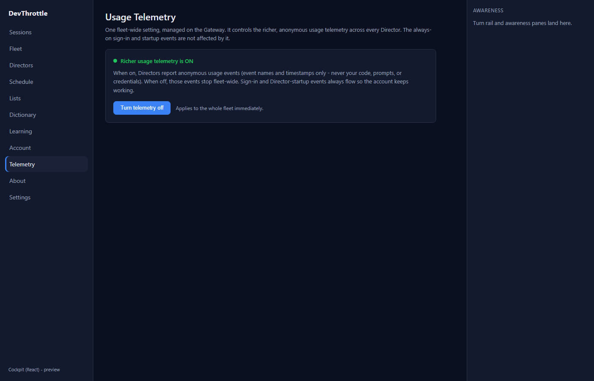
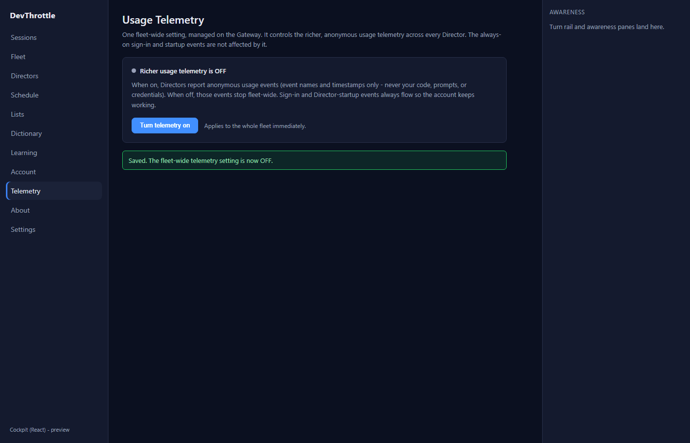
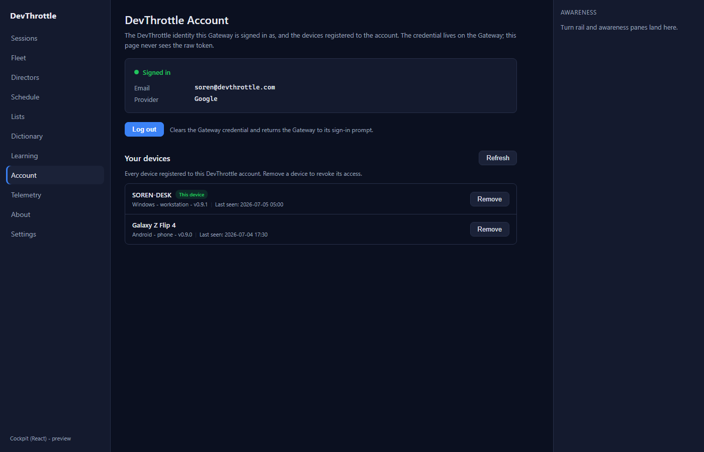
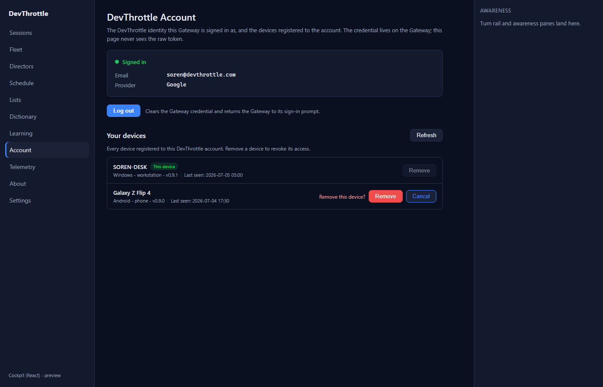
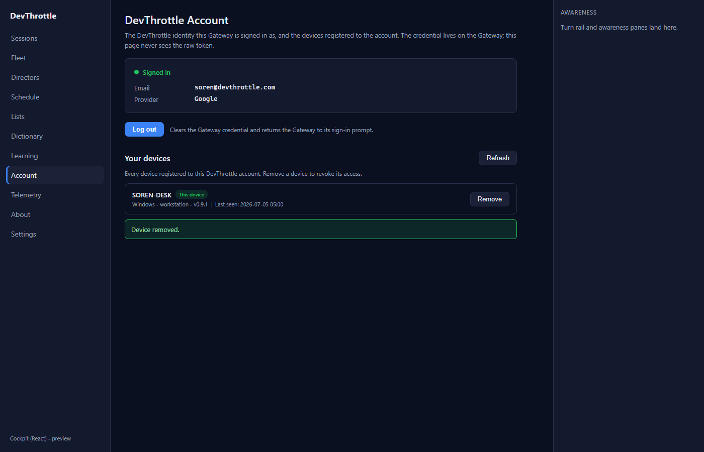
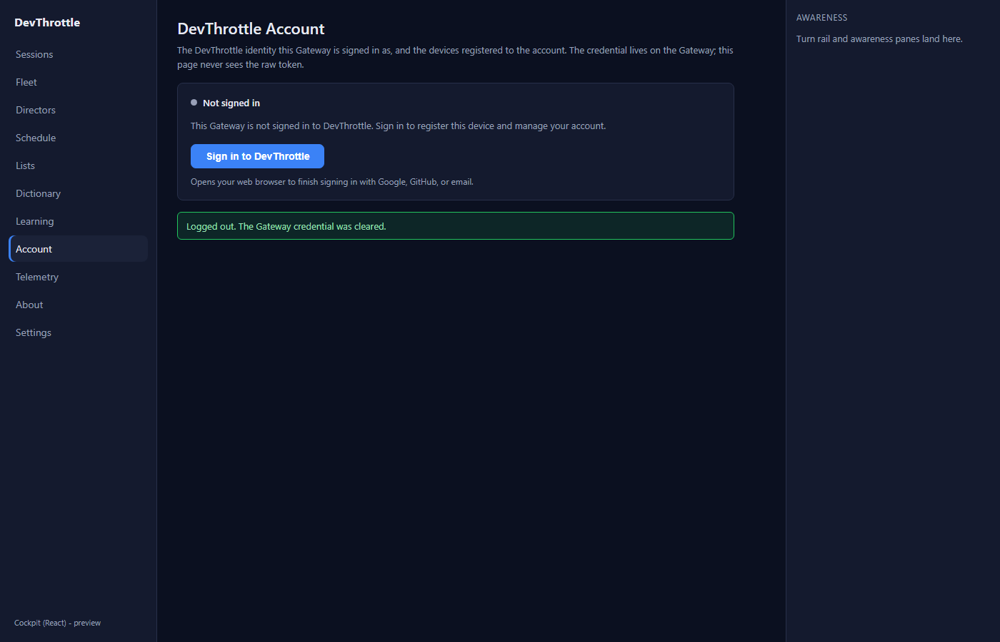
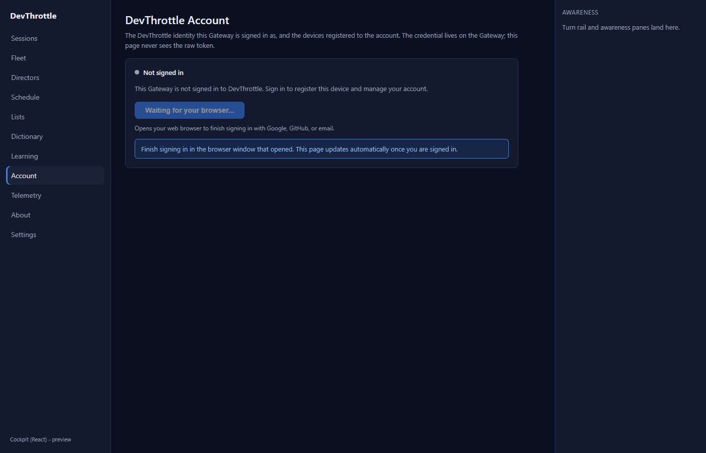
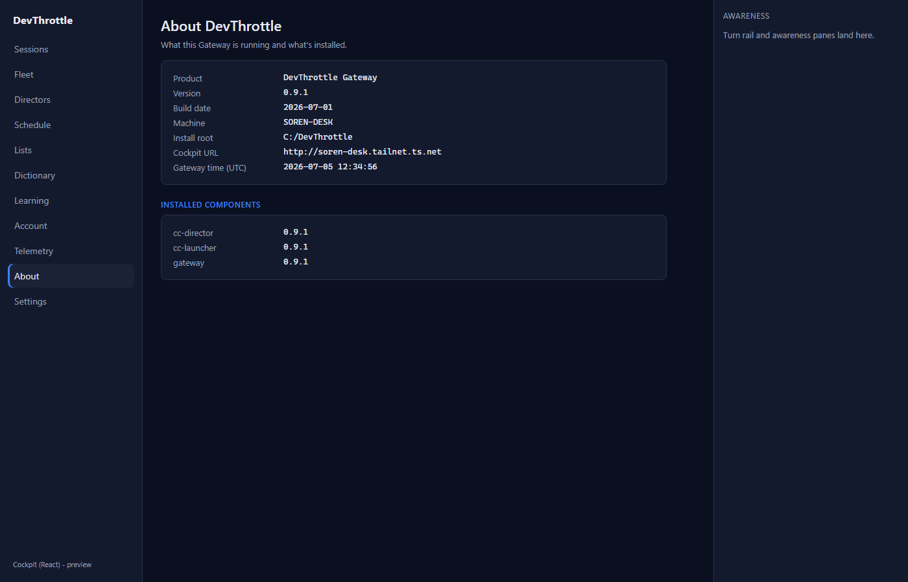
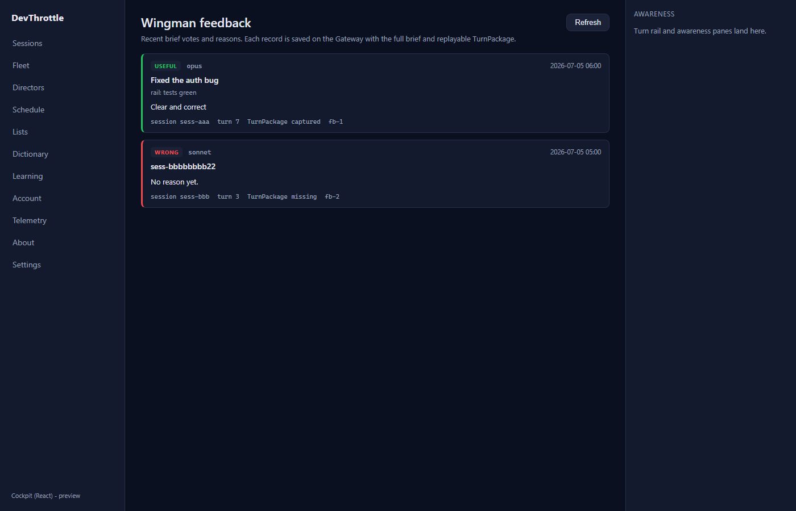
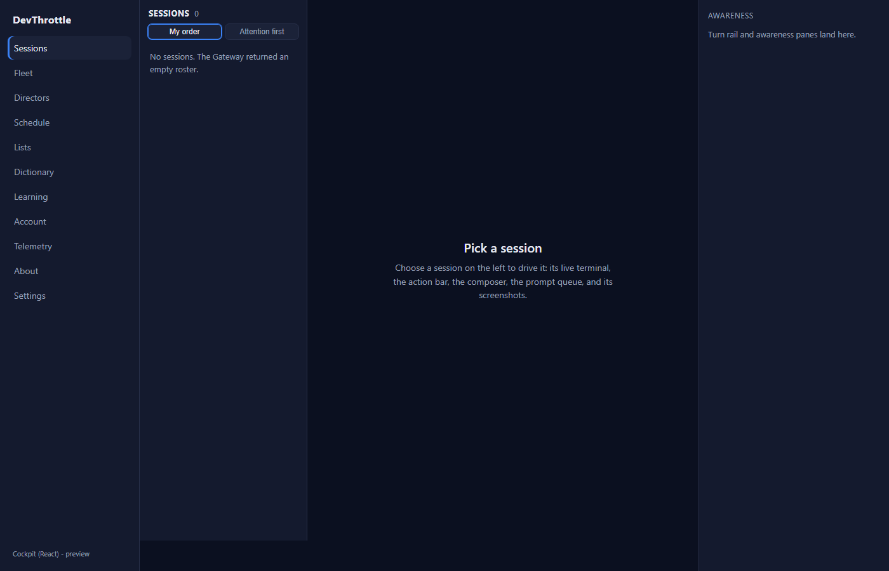

Issue #978 - QA verification (independent)
Cockpit React: port Telemetry + Account + Feedback + About + the roster entry pages. Epic #967 (Rebuild the Cockpit in React), the LAST page-port. This is the QA Agent's OWN verification - built and driven independently in an isolated git worktree, not the Developer Agent's binary or screenshots. Every screenshot below is a real render of the ported React screens (Vite dev server), driven by Playwright against an isolated route-mocked Gateway that records each mutating request.
Build gate (all clean, run by QA in its own worktree)
| Gate | Command | Result |
|---|---|---|
| Cockpit build | npm run build --workspace @devthrottle/cockpit (tsc --noEmit + vite build) | PASS - 103 modules transformed, built clean |
| Lint (Gateway-only-ingress, no absolute URLs) | npm run lint | PASS - clean across the workspace (exit 0) |
| Gateway release target (stages the React bundle) | dotnet build src/CcDirector.Gateway -p:RunCockpitBuild=true | PASS - 0 warnings, 0 errors; 3 files staged into wwwroot/c |
| Full solution | dotnet build cc-director.sln | PASS - 0 warnings, 0 errors |
| Workspace typecheck baseline (#1010) | npm run typecheck | Only the pre-existing awarenessClient.test.ts failure (#1010) - all 7 errors in that one untouched file; cockpit + mobile typecheck clean. #978 adds NO new typecheck/test failure. |
Independent absolute-URL scan of every new module/view
(grep -rE "https?://|wss?://" over the new telemetry/account/about/feedback client modules
and views): no matches. All requests are root-relative to the Gateway front door.
Acceptance criteria - Expected vs Actual
| # | Criterion | Expected | Actual (verified) | Verdict |
|---|---|---|---|---|
| 1 | Every listed page renders the same information and supports the same actions as its Blazor counterpart. | Telemetry toggles consent; Account signs in / logs out / lists + revokes devices; About shows the diagnostics grid + installed components; Feedback lists the Wingman vote corpus. | All four rendered and behaved identically to their .razor sources (read side by side). Telemetry ON->OFF with the "Saved" banner; Account signed-in identity + device list + inline-confirm revoke + log out + sign-in; About full grid + INSTALLED COMPONENTS; Feedback both useful/wrong corpus cards with model/headline/rail/reason/session/turn/TurnPackage/id. |
PASS |
| 2 | Writes actually reach the right endpoint / method / body. | Telemetry PUT, device DELETE, sign-in POST, logout POST. | Recorded by the isolated mock: PUT /gateway/telemetry-consent {"enabled":false}, DELETE /account/devices/dev-2, POST /account/logout, POST /account/sign-in. The device row disappeared and "Device removed." showed after the DELETE; the banner flipped to OFF after the PUT. |
PASS |
| 3 | The React shell's navigation reaches every page; no Blazor path is still required. | Every Cockpit page reachable from the React shell. | Left rail lists Sessions, Fleet, Directors, Schedule, Lists, Dictionary, Learning, Account, Telemetry, About + a full-load Settings link (a superset of the Blazor NavMenu's visible items). Route-only pages (Feedback, Wingman, Transcripts, Exes) match the Blazor pattern of being reached by direct route. The Blazor session entry paths redirect into the single core: /cockpit/{sid} and /sessions/{sid} -> /session/{sid}; bare /cockpit and /sessions -> the roster index. Verified live: navigating /c/cockpit/mysess and /c/sessions/mysess both landed on /c/session/mysess; /c/sessions landed on /c. |
PASS |
| 4 | No absolute URLs in the client (lint rule passes). | npm run lint clean; no http/https/ws/wss literals in new client code. |
Lint exit 0; independent grep of new modules/views found no absolute URL literals. | PASS |
| 5 | Roster entry paths align with the rail-plus-terminal core - no duplicate session view. | One session experience; the Blazor Home/Sessions/SessionDetail paths fold into it. | The index (/) is the single rail + roster ("My order / Attention first") + "Pick a session" core; no second dashboard/list/detail was created. The Blazor id paths redirect into /session/{sid}; the bare list/home paths redirect to the index. |
PASS |
Feedback scope - independently confirmed
QA read the Blazor source directly: src/CcDirector.Cockpit/Components/Pages/Feedback.razor
is the Wingman feedback-corpus reader (read-only, GET /turnbriefs/feedback). It does NOT
file GitHub issues. The "Help → Send Feedback" flow that files a GitHub issue on
thefrederiksen/devthrottle with a screenshot on the feedback-assets branch is
CcDirector.Core.Feedback.FeedbackService - a desktop-app (Help menu) feature that the Cockpit
never served and that is not wired to any Cockpit or Gateway endpoint. The issue's Scope note conflated the
two; the developer correctly ported the actual Cockpit Feedback page one-to-one and documented the
distinction. QA verified the Feedback page's wiring against the isolated mock (GET
/turnbriefs/feedback?count=100) and filed NO real GitHub issue. The acceptance criteria (same info +
actions as the Blazor counterpart) are met.
Screenshots (QA's own renders)










flow:done and squash-merged. This completes the last page-port under epic #967.